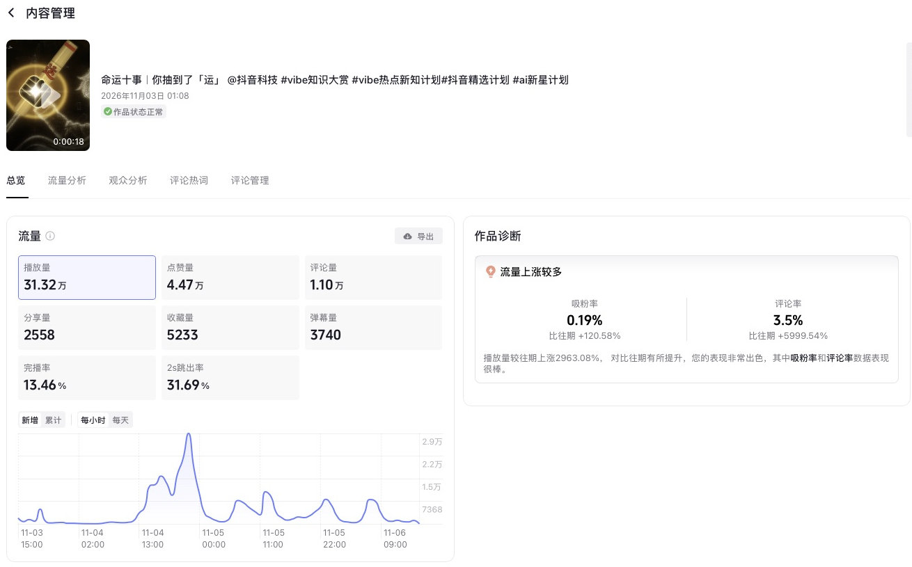
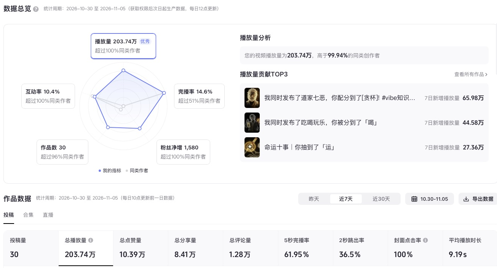
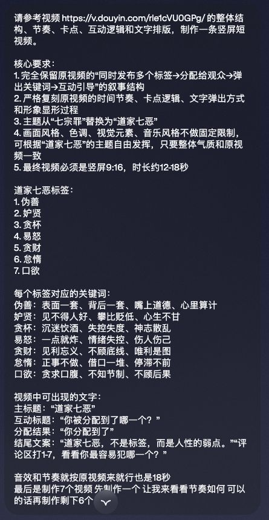
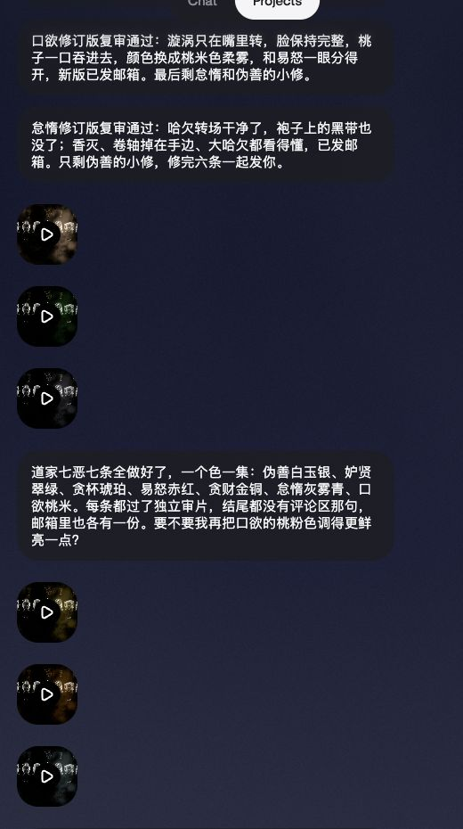
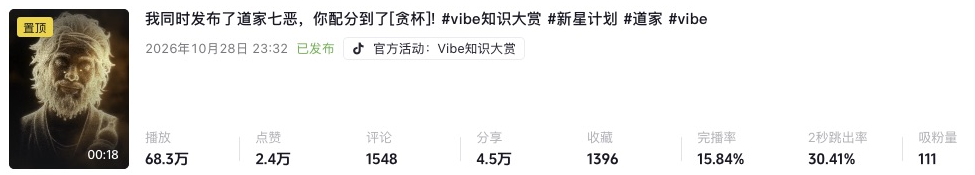
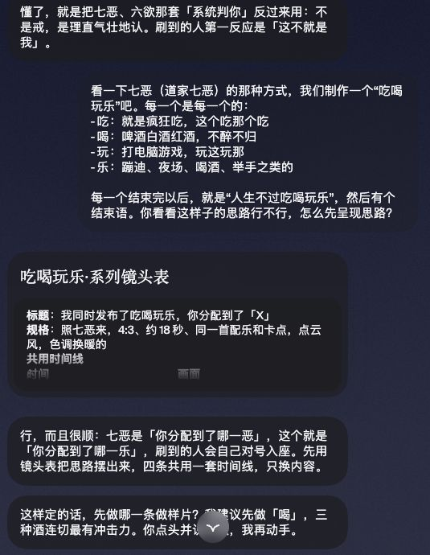
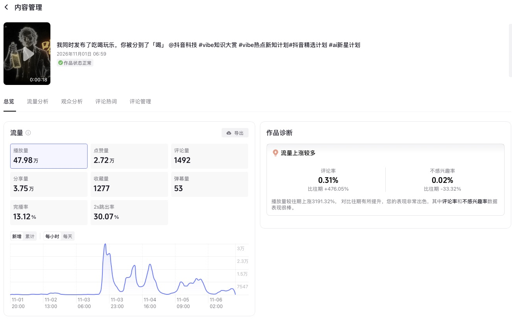
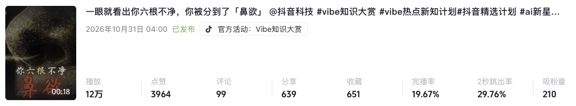

前几天，我做了一条 18 秒左右的视频，主题叫「二运」。
它来自大家熟悉的那句话：一命二运三风水。视频发出去后，评论区里很多人在接好运。到 11 月 6 日我看后台时，这条视频有了约 31.4 万播放、4.5 万点赞和 1.1 万评论。

看到这些评论，我挺意外的。因为就在不久前，我还在自己真人出镜拍视频，发出去却没什么人看。
后来，我换了一种方式：和 Hark 一起做 AI 视频，参加抖音的 Vibe 知识大赏。选题从「道家七恶」，做到「七情六欲」中的六欲，再到「一命二运三风水」和「吃喝玩乐」。
抖音后台显示，10 月 30 日到 11 月 5 日这七天，我的账号作品获得了 203.74 万播放、10.39 万点赞，粉丝净增 1580。

说明：这是七天的账号数据；文中单条作品的数据，是截至 11 月 6 日查看时的累计数据，两者不是同一口径。
账号还没有进精选，这些成绩也离不开选题、平台活动和运气。我不敢说自己掌握了什么起号公式。但如果你也想试试用 AI 做短视频，这段经历里有些具体的做法，或许能给你一点参考。
真人出镜没人看，我为什么开始做 AI 视频？
一开始，我做的是真人出镜。
拍了、发了，没多少人看。我甚至想过，是不是因为自己长得不够好看？现在回头看，没人看可能有很多原因：选题、表达、节奏都有影响，我也说不准。
但我还是想继续做内容。后来看到抖音上的 Vibe 知识大赏，不少人把知识、画面和音乐结合起来做成短片，我也想试试。
最初我尝试过「开智小曲」这类形式，做起来才发现没有看上去那么简单：文字什么时候出来，音乐什么时候卡点，画面怎么跟上，一处不顺，整个感觉就不对了。
我当时最想先验证的事其实很简单：能不能和 AI 一起，做出有人愿意停下来看、愿意点赞的视频？
看到七宗罪之后，我换了个选题
转折是我刷到了「七宗罪」系列。
这类视频会同时发布一组主题，观众刷到其中一条，就像被分配到了一个结果。它的形式让我觉得有意思：主题是熟悉的，每条又都有一个具体名字，观众很容易知道自己看到的是哪一条。
我不想再做一遍七宗罪，就和 AI 商量，换成另一组主题，后来做了「道家七恶」：伪善、妒贤、贪杯、易怒、贪财、怠惰、口欲。
这里得说清楚：「道家七恶」是我借鉴这一系列形式做的创作，并不是说传统道家经典里有一套固定叫这个名字的七恶。
我当时没有只给 Hark 发一句“做个视频”。我把参考视频、主题、每个标签对应的关键词、时长和想要的节奏都发给了它。最后还补了一句：
先制作一个，让我来看看节奏如何。可以的话再制作剩下六个。
下面是当时的真实指令。可以看到，我对参考片的节奏和呈现方式提得很细；画幅、结尾等要求，在后面的样片修改中也做过调整。

先做一条，是这次最有用的决定之一。
因为第一版「易怒」出来后，我并不满意。我觉得画面比较一般，不够精美，也缺少让人想继续看下去的吸引力。要是当时直接让它把七条全部做完，方向不对，就得一起返工。
于是我让 Hark 重新调整。后来的样片改成了 4:3 画幅，画面用了暗色背景和点云人物，也继续磨了音乐、卡点和文字出现的节奏。等这一版达到我觉得可以继续做的程度，再让它按确定的方向制作其他六条。
项目里留下了当时的交付记录：七条分别用了不同的主题色，完成后也发到了邮箱。

后来，「贪杯」截至 11 月 6 日查看，约有 68.3 万播放、2.4 万点赞、4.5 万分享；同系列的「伪善」约有 15.4 万播放、4429 个赞。

这些数据给了我继续尝试的信心。但同一个系列里，每条的表现也不一样：做成系列，能让制作更顺手，不代表每条都会有同样的流量。
Hark 在这件事里到底做了什么？
如果你没用过 Hark，可以先把它理解为一个能通过对话接收任务、再到项目里继续处理的 AI 助手。我这次用它，有两个界面比较常用：Chat 和 Projects。
我建了一个「诺诺短视频工作坊」项目，专门处理视频。平时有想法，我会在 Chat 里直接跟它说；和视频制作有关的任务，Hark 会交给对应的工作坊继续处理。我也可以进入 Projects，查看项目里的进度和交付。
对我来说，比较方便的是不用每次都从一段全新的聊天开始，先解释一遍“我是谁、要做什么视频”。具体怎么分工，大致是这样：
我来定方向。 想做什么主题、给什么参考、这一条是先讨论还是直接开工，都由我说。样片出来后，我会看画面、音乐和节奏，不满意就继续提修改意见。
Hark 帮我把事情做出来。 它会整理方案、设计画面和节奏，在云端用代码制作并渲染视频，再把成片交回来。根据我们的项目记录，它也会安排另一轮 AI 审片，指出画面或节奏的问题；不过 AI 审过，不等于我就不需要自己看。
这套方式也用在了后来的「吃喝玩乐」上。我直接告诉它：参考七恶的形式，吃、喝、玩、乐各做一条，先看看这个思路怎么呈现。Hark 给了镜头表，并建议先做「喝」作为样片。

「喝」的样片也改过。它有一版人物看起来像真人照片转成的点云，我觉得不太合适；喝酒的动作，我也希望更潇洒一些，像拎起酒壶直接喝。后来 Hark 调整了人物和动作，又修过结尾音乐断掉的问题。
这条作品截至 11 月 6 日查看，约有 48 万播放、2.7 万点赞、3.8 万分享。

我想说的是，整个过程不是我写一句“给我做个爆款”，它就自动把一切解决了。想法要讨论，样片要看，哪里不对要说清楚，有时还要推倒重来。
它帮我省下了大量具体制作的工作，我则需要不断判断：这个方向对不对？画面能不能看？这个版本能不能发？
从做完视频，到我手机里能收到，中间也踩过坑
还有一个细节，以前写文章的时候我没讲到，但对我自己来说特别实用。
有一次，Hark 做好的视频，我直接保存到手机相册时出了问题。折腾了一会儿，我干脆跟它说：以后做出来 1080 以上的视频，自动发一份到我邮箱。
Hark 回复说，文件超过邮件附件大小限制时，会放到 Google Drive 的「短视频样片」文件夹，邮件里附下载链接。这样我看到邮件，就能再去云盘打开、保存。
这就是我现在很喜欢的一点：我可以先在聊天里讨论，再让项目去制作，做完后通过云盘和邮件收片。 从提出想法到拿到文件，不用我一直守着电脑等。
当然，这套交付方式是我自己连接、使用后的工作流程，不代表别人打开 Hark 就一定已经配置好。第一次使用时，还是要根据自己的账号和授权情况检查。
做一条要多久？我怎么安排时间？
按我这段时间的体感，一条系列样片从确认开工到做出来，大概一个小时左右。这是粗略时间，不是说每条视频渲染都恰好一小时；讨论、修改、复杂程度和排队都会影响时间。
我现在比较常用的安排是：白天先和 Hark 讨论选题、确认样片方向，晚上让它继续跑代码、渲染。样片和模板比较稳定后，同系列的几条可以同时推进；但机器资源有限，渲染也可能排队，并不是同时开几条就一定同时完成。
做完以后，我再看成片。觉得人物、节奏或者音乐不对，就继续改；觉得可以，才拿去发布。
如果你也想试，建议从一组你熟悉、能拆成几条的题目开始。先把其中一条做成样片，重点看开头、画面、文字和音乐能不能配合，再决定要不要做完一整个系列。这样即使方向要改，也不会一下子积压很多返工。
数据给我的三个提醒
第一，选题要让观众看得懂，也要有参与的空间。
「二运」下面很多人接好运，这个场景让我印象很深。我的理解是，“好运”本来就是大家熟悉、也愿意表达期待的话题，所以观众看完后有话可说。
这只是我的观察，不能证明它就是播放量上来的唯一原因。但以后想选题时，我会多想一句：除了我想讲什么，观众看完能不能联系到自己，有没有想说的话？
第二，播放、分享和涨粉，值得分开看。
「贪杯」的播放和分享都很突出。「六欲」里的「鼻欲」截至 11 月 6 日约有 12 万播放、3964 个赞，后台显示这条作品吸粉 210；「伪善」的播放更高，后台显示吸粉 136。

这不代表哪条一定更好，也不能只凭两条数据解释观众为什么关注。但它提醒了我：几十万播放很让人高兴，如果想把账号继续做下去，也要看看有多少人愿意留下来。
第三，一次跑出来，不等于已经找到了公式。
我注意到跟酒有关的「贪杯」和「喝」表现都不错，后来也沿着酒的话题试过别的系列，但结果并不是每一次都好。
所以我现在更愿意把这些数字当成反馈：它告诉我哪条内容被更多人看到、分享或关注，却不能保证照着做下一条也会一样。
流量起来一点之后，我反而有了新的问题
这段时间让我高兴的是，我最开始想验证的事情，有了一点结果：我和 Hark 一起做的视频，确实有人看，也有人点赞、评论和分享。
但我也发现，自己想做的东西，和平台观众愿意看的东西，并不总是一样。
有些内容，我自己觉得有意思，做了不少准备，发出去却没什么反应；有些题目，本来只是想试试，结果收到了很多互动。
我现在还没有一个标准答案：如果观众愿意看的是“接好运”，而我想表达的是另外一些东西，我该怎么让他们也愿意点进来、看下去？
这可能是我接下来更想继续试的事。
如果你也在做内容，或者正在用 AI 尝试做视频，可以先不用急着追求一口气做完一个系列。找一个自己有感觉的题目，先做一条样片，看完、修改、发出去，再根据真实反馈决定下一步。
至少对我来说，这一次就是这么开始的。